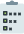

<ion-split-pane>
    <ion-menu contentId="content">
      <ion-header no-border>
        <ion-toolbar color="success" no-border>
          <ion-title>Menu</ion-title>
        </ion-toolbar>
      </ion-header>
      <ion-content>
        <ion-list>
          <ion-item tappable routerLink="/home/destaques" routerDirection="root">
            Início
          </ion-item>
          <ion-item tappable routerLink="/home/midia" routerDirection="root">
            Mídia
          </ion-item>
          <ion-item tappable routerLink="/home/enquetes" routerDirection="root">
            Enquete
          </ion-item>
          <ion-item tappable (click)="logout()" routerLink="/login" routerDirection="root">
            <ion-icon name="log-out" slot="start"></ion-icon>
            Sair
          </ion-item>
        </ion-list>
      </ion-content>
    </ion-menu>
  <ion-router-outlet id="content" main>
    <ion-tabs>
      <ion-tab-bar>
    
        <ion-tab-button tab="midia">
          <div class="icon">
            
            <p>Midia</p>
          </div>
        </ion-tab-button>
    
        <!-- <ion-tab-button tab="pautas">
          <div class="icon">
            
            <p>Pautas</p>
          </div>
        </ion-tab-button> -->
    
        <!-- <ion-tab-button tab="iniciativas">
          <div class="icon">
            
            <p>Iniciativas</p>
          </div>
        </ion-tab-button> -->
    
        <ion-tab-button tab="enquetes">
          <div class="icon">
            
            <p>Enquetes</p>
          </div>
        </ion-tab-button>
    
      </ion-tab-bar>
    </ion-tabs>
  </ion-router-outlet>
</ion-split-pane>
